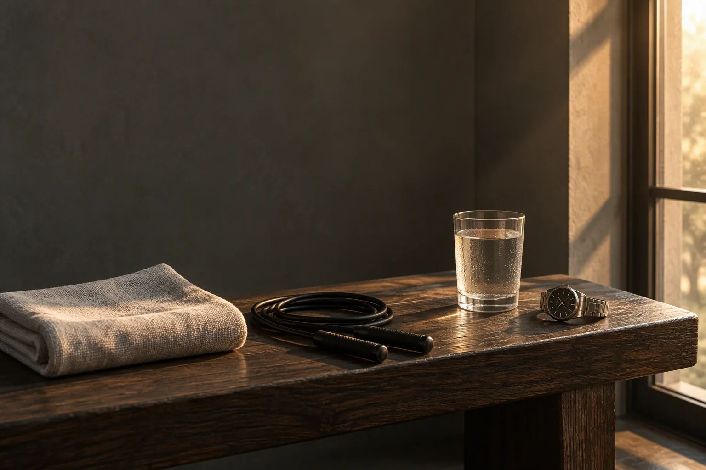
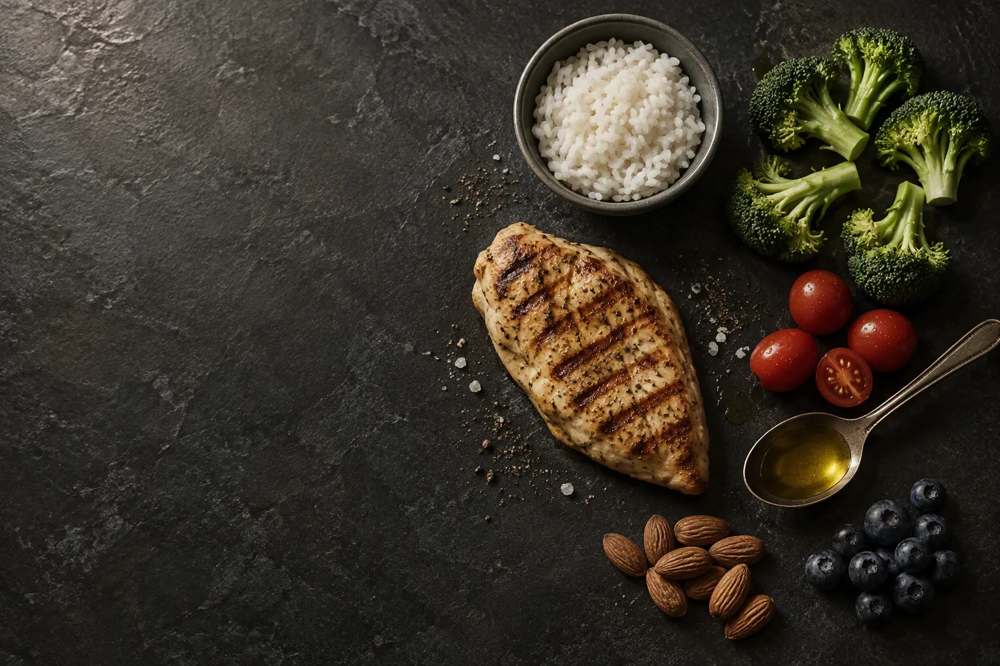
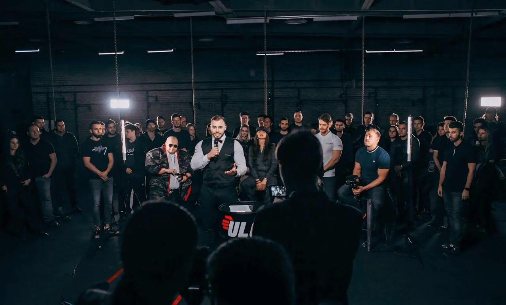
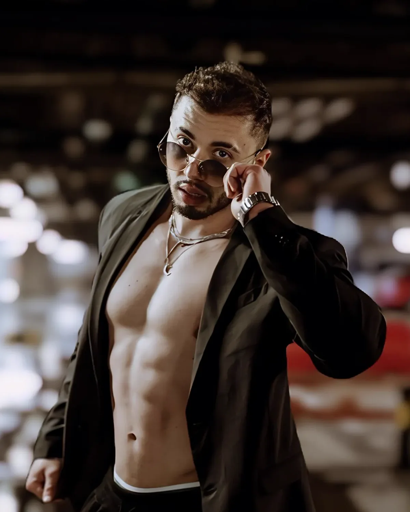
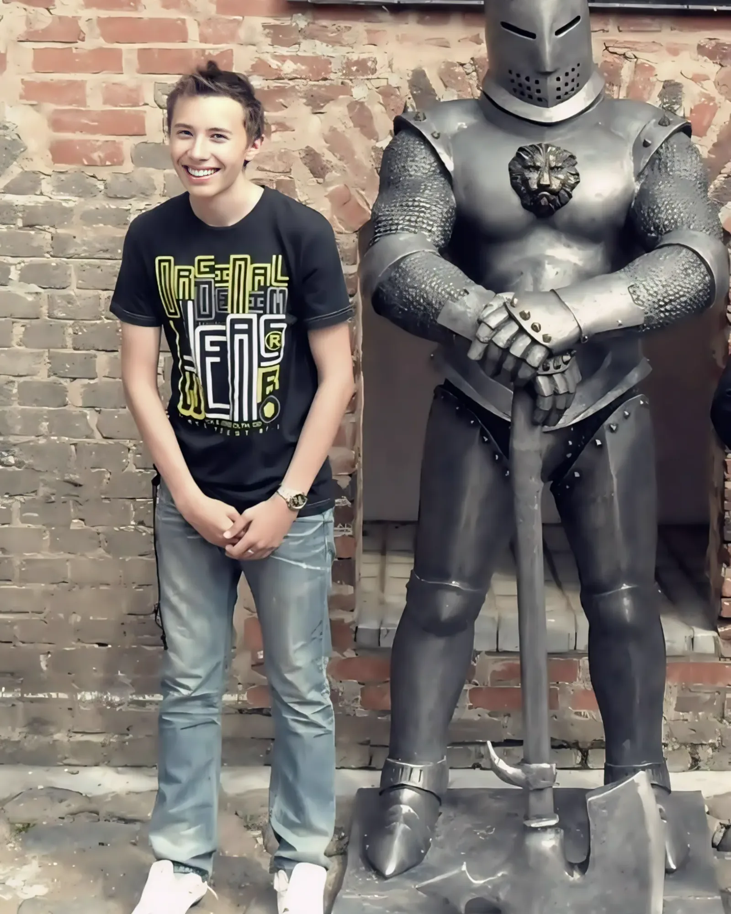
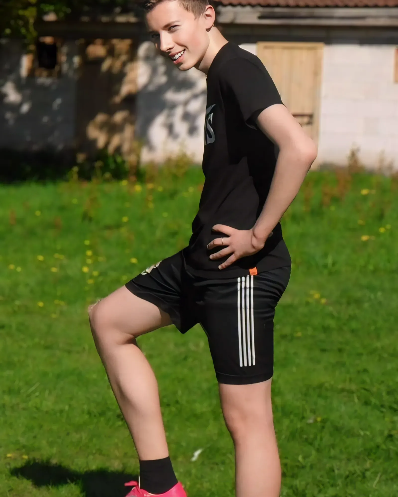
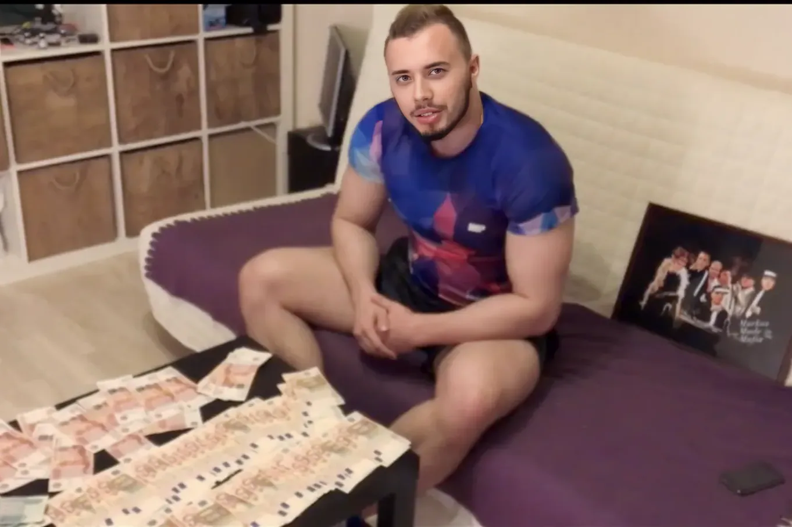
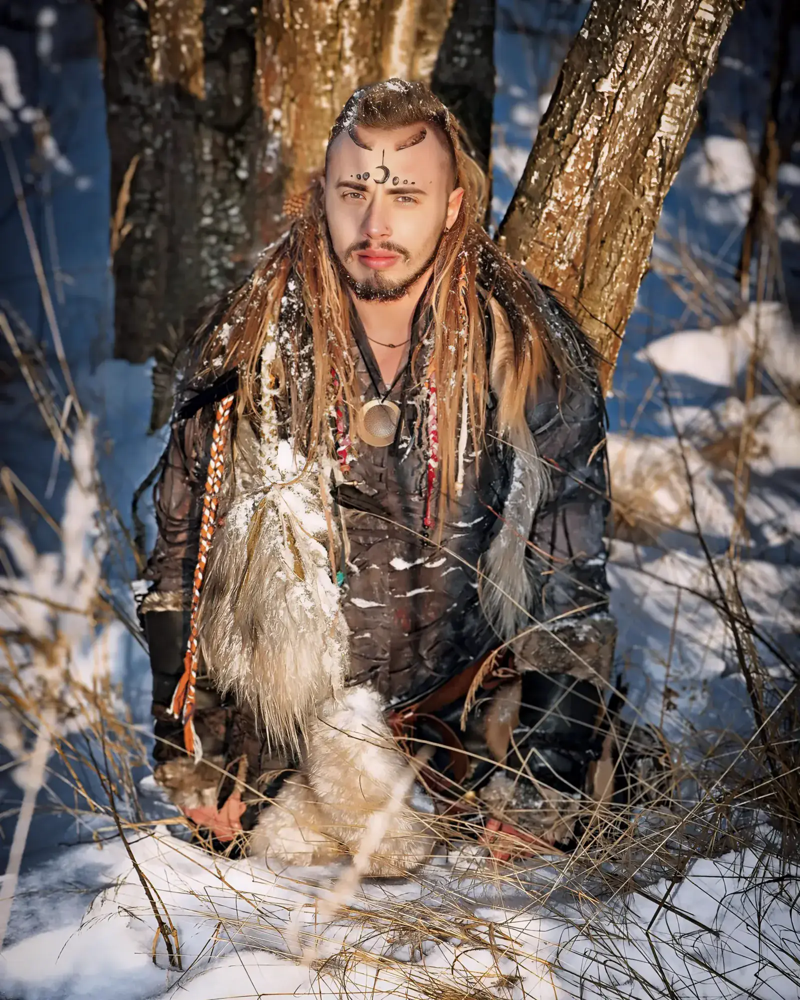
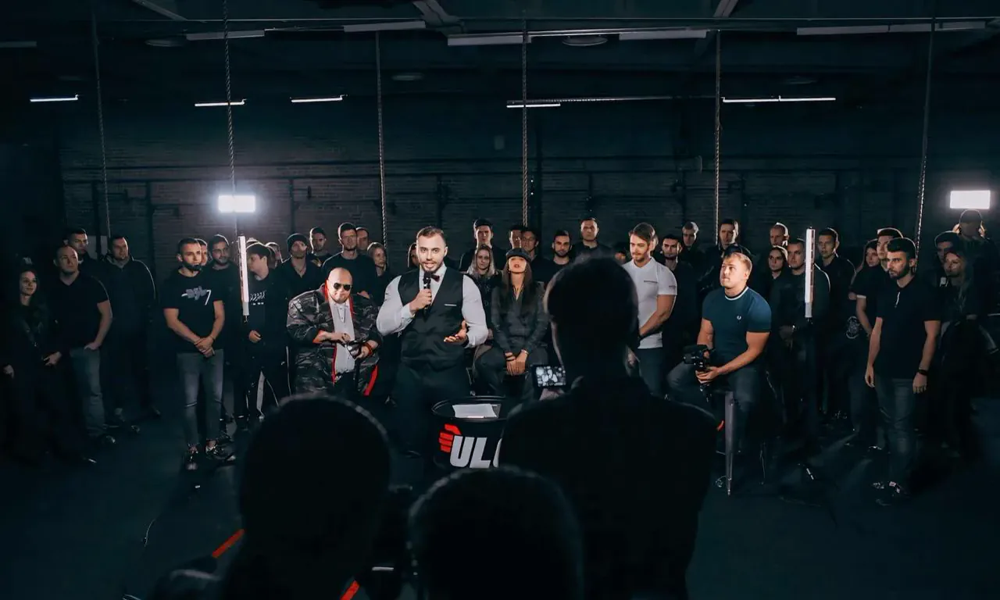
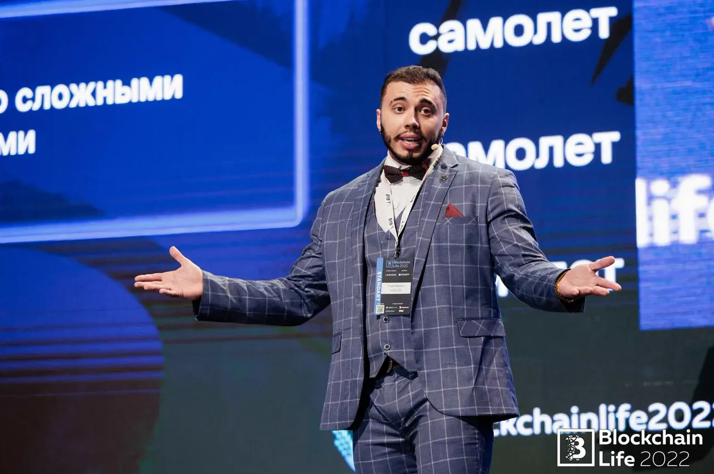

Международное образование
Учёба и квалификации
Фитнес, нутрициология и коучинг. Подтверждающие документы покажу по запросу.
- EREPS2019
- МИИН2022
- ICA2026
Я — Павел Марков. Помогаю выстроить тренировки, питание, восстановление и привычки с учётом вашей цели и обычного графика. В LAB можно начать самостоятельно. В личной работе соберём план под вашу жизнь.
Образование, практика и личный опыт — три разных опоры моей работы.
Фитнес, нутрициология и коучинг. Подтверждающие документы покажу по запросу.
14+лет тренировочного стажа
Я прошёл через периоды интенсивных тренировок, восстановления и возвращения к режиму. Этот опыт помогает мне учитывать, как план сочетается с обычной жизнью.
Вместе выбираем посильные шаги, смотрим на изменения и при необходимости корректируем план. Медицинские вопросы решает врач.
В LAB — расчёты и инструменты для самостоятельной работы. Personal OS показывает, как устроено персональное сопровождение.
Проверьте основные показатели и выберите, что делать дальше. Расчёты и история остаются в вашем браузере.
Инструменты загружаются при открытии раздела.
FFMI, КБЖУ, восстановление и динамика полезны только тогда, когда из них понятно, что менять первым: питание, нагрузку, режим, темп или формат работы. Я перевожу показатели в решение, которое можно выполнять.
Обсудим вашу задачу
Начните с одного сообщения.
Напишите в Telegram или WhatsApp. Если хотите, выберите цель — она добавится в сообщение.
Ничего заполнять не нужно. Выбор цели и подробностей — по желанию.
Я соединяю тренировки, питание, восстановление и привычки. Вместе выберем формат и темп, которые подходят вашей цели и повседневной жизни.
Силовая работа, техника и нагрузка, собранные под вашу цель и реальный график.
Питание, тренировки и удобный темп для вашей повседневной жизни.

Разберём рацион и привычки, чтобы подобрать понятные шаги для вашего самочувствия.

Я прошёл через потерю бизнеса, зависимость и тяжёлую депрессию. Этот опыт помогает мне поддерживать людей в переменах.
Здесь собраны типовые запросы по каждому направлению: с чем человек приходит, что разбирается на встрече и какие первые шаги можно определить.

Расскажите, что хотите изменить и что сейчас мешает. Обсудим подходящий формат.
Написать о своей задачеЦель, доступное время и исходные данные задают план. Наблюдения показывают, стоит ли его менять.

Пять этапов моей жизни и путь к MARKOVMADE. Спорт, работа, кризисы и личный опыт помогли мне собрать подход, который учитывает обычную жизнь человека.
В 13 лет я запустил первый бизнес по дропшиппингу и создал в посёлке сообщество о здоровом образе жизни. В 14 играл в профессиональный футбол и получил вызов в сборную. Травля, коррупция и травма завершили этот этап. Я сосредоточился на тренировках и развитии. Так появились бренд Young Athlete и сообщество Markov Made Mafia.


С 17 до 20 лет я участвовал в соревнованиях по бодибилдингу, переехал в Петербург и работал в сети Sport Life. Изучал медицину и маркетинг, участвовал в проекте «Дом-2», запустил стоматологическую клинику и кальянный бизнес. К 20 годам у меня было 5,5 млн накоплений и большая аудитория.

В 21 год предательство близкого друга и партнёра оставило меня с долгом 1,5 млн рублей. Я продал активы, ушёл из соцсетей и пережил тяжёлую депрессию. Затем переехал в Китай. За год там я выучил основы языка, работал моделью и занял призовые места на международных турнирах. Жизнь в другой стране помогла мне начать заново.

После возвращения в Россию я создал агентство BrandYouMade и продолжил изучать психологию, продажи и маркетинг. Работал руководителем в сфере недвижимости в Сочи и выступил на Blockchain Life перед аудиторией в 12 000 человек. Этот опыт соединил работу с людьми, командами и бизнесом.


Мой опыт спорта, бизнеса, финансовых трудностей и личных перемен привёл меня к созданию MARKOVMADE. Я делаю цифровые продукты, которые помогают человеку лучше понимать себя и свои ежедневные решения.
Сегодня я развиваю MARKOVMADE и продолжаю работать как амбассадор. Рядом со мной мой шпиц. Всё, что я прошёл, остаётся частью моей истории.
MARKOVMADE / PERSONAL OS
Прототип соединяет питание, тренировки, восстановление и прогресс. Каждый экран помогает понять текущую динамику и выбрать что делать дальше.
Не реагирует на случайный вес или один плохой день.
Данные превращаются в конкретный следующий шаг, а не в информационный шум.
Тело, питание, нагрузка и восстановление работают как одна система.
Прототип загружается при открытии раздела.
Это закрытое объединение для тех, кто разделяет мои ценности. Мы растём индивидуально, но используем общие ресурсы, чтобы путь к цели был короче.
Доступ к проверенным инструментам, скидкам на услуги партнёров и закрытым мероприятиям команды.
Прямой доступ к общим знаниям и опыту. Обучение, которое даёт результат без лишних движений.
Правильное окружение и нетворкинг. Здесь ваши идеи находят поддержку и реальное воплощение.
Хотите узнать об участии? Напишите, и я расскажу о сообществе и текущем формате.
Узнать о вступленииНет. Я смотрю на тело, питание, режим, восстановление, дисциплину и ограничения — иначе форма быстро упирается в быт.
Да. Разбор как раз нужен, чтобы увидеть старт и первые действия без перегруза.
Нет. Сначала можно пройти разбор и понять, какой формат имеет смысл именно под вашу задачу.
Тогда особенно важно собрать план под реальный график, а не под чужую идеальную жизнь.
Понимание ситуации, первые шаги, точки наблюдения и формат, с которого логично начать.
Ценность не в «совете на минуту». Ценность в том, что после контакта у человека появляется ясность: что происходит с телом, питанием, мышлением и режимом — и какие первые действия дадут результат без лишней суеты.
Минск • Сочи • Москва • СПб. Живой разбор, где сразу видно, что мешает форме: техника, питание, режим, дисциплина, ограничения и реальная точка А.
Для тех, кому нужен результат без привязки к городу: видеосвязь, контроль, персональное приложение, понятные задачи и корректировки под график.
В работе я учитываю человека целиком: тело, питание, мышление, режим, ограничения, цель и повседневные задачи.
После первого контакта мы определим вашу цель, обсудим тренировки, питание и режим, выберем подходящий формат. Вы получите первые шаги и поймёте, что отслеживать и когда менять план.
Ваш результат начинается с принятого решения.
Я жду тех, кто готов.